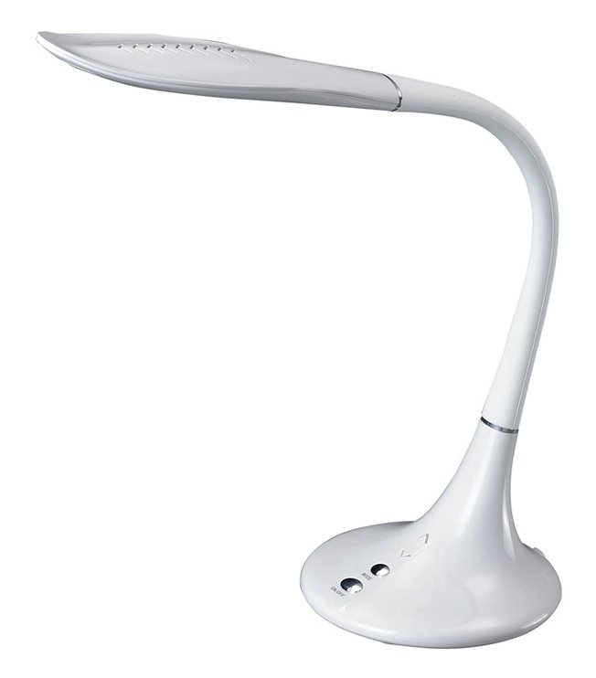
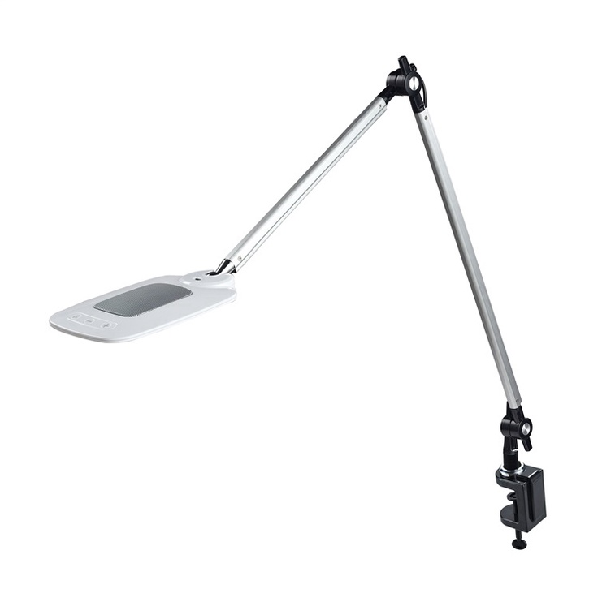
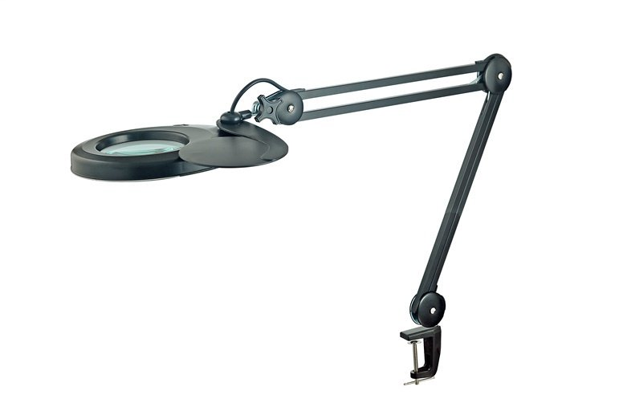
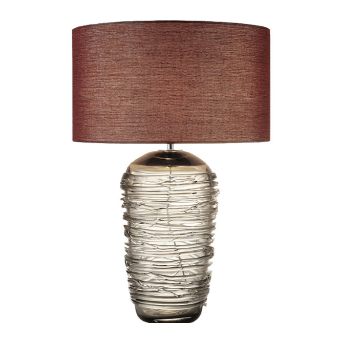

Photo gallery
2020.10.30 04:35










- Stalo lempos - terapro.lt
Mes daugiausia užsiimame mozaikinių amatų apšvietimo productions.our daugiausia produktas yra Turkijos lempos. Tai apima lubų lempas, sienines lempas, stalo lempas, grindų lempas. Žvakių laikikliai ir kvapiosios lempos. - Žaliosios stalo lempos | northerndefenders.info
Atminkite, kad dešiniarankio asmens stalo apšvietimas turėtų būti kairėje, o kairiarankio – dešinėje pusėje. Šviestuvo galvutės atstumas iki apšviečiamos vietos maksimaliai turėtų siekti 35 cm. Šviestuvo formos gali būti labai įvairios, populiariausios yra tokios: Pastatomi šviestuvai – klasikinės stalinės lempos. - Stalinės lempos (77 nuotraukos): LED versija kompiuterio ...
Stalo LED lempa Ilumen LX-800 balta Modernus dizainas Patogus jutiklinis jungtukas4 šviesos režimai: balta, gelsva, natūrali, gęstanti šviesa Integruotas akumuliatorius Lankstus stovas Maitinimas per USB lizdą įvairiakryptė šviesa 360º Šviesa draugiška akims Ilgas tarnavimo.. - Stalo lempos - Dancovershop LT
Stalinės lempos. Nors apstu įvairių modernių apšvietimo sprendimų, o didelė dalis spintelių ir kitų baldų jau savaime siūloma su integruotu apšvietimu – stalinės lempos vis dar populiarios. To priežasčių yra labai daug: patogus apšvietimo būdas ten, kur jo reikia, galimybė perkelti lempą į kitą vietą ar keisti šviesos židinio nuotolį (jei šviestuvas suteikia tokią ... - Miegamojo stalinės lempos (59 nuotraukos): lovos lempos ...
Lempos tipas (dpps) (laser Rg air culing) Imamas energijos galingumas 1600W Varančioji sistema Servo varikliai (Japonija Aušinimo tipas Aušinimas (Oru) Darbastlio aukstis 720m Darbo zona 850mmx600mm Darbinio stalo tipas (Koretas) Kilnojantisis darbinis stalas Y asies Rotorius 360laipsniu Pjovimo greitis (0-87000mm/min) Graviravimo greitis (0 ... - Stalinės lempos | Stalinė lempa | Išskirtinis stalinių ...
Dažniausiai lempos paprastai dedamos ant lovos stalo šalia lovos ar sofos rankos. Tai yra patogu, nes jūs, be įjungę bendrą šviesą ir neužsisklindę iš lovos, galite greitai ir lengvai patekti į lempą rankomis ir nedelsdami jį įjungti. Tai taikoma lovos lempoms. Šviesos jūsų darbo vietai apšviesti yra ant stalo ar prie sienos. - Stalinės lempos | Senukai.lt
Norite geresnės kainos - tapkite „Draugų rato“ nariu Tapti nariu-15% - Kinijos liustra ir pakabinimo lempos, stalo lempos ...
Aukščiausios kokybės ir gerai suprojektuotų stalinių lempučių (10W-100W) didmeninė prekyba su mūsų profesionaliais gamintojais ir tiekėjais. Siūlome svečiams stalines lemputes (10W-100W): konkurencingos kokybės medžiagos, kūrybingi dizainai ir geri rezultatai. Jei reikia daugiau informacijos, susisiekite su mūsų gamykla. - STALO ŠVIESTUVAI virš 250 modelių Žema kaina | Varle.lt
Stalinės lempos reikalingos kiekvienam darbuotojui ar daug besimokančiam žmogui. Papildomas apšvietimas sumažina akių nuovargį, padeda dirbant kruopštumo reikalaujančius darbus. Reguliuojama šviesos srauto kryptis, sąlyginai mažas dydis, kompaktiškumas ir stilius - tai tik keli stalinių lempų privalumai. - Stalinės lempos - Ardena
Žaliosios stalo lempos gamybai naudojamos šios medžiagos: Metalas. Iš šios medžiagos gali būti atliekama kaip plafonai, ir pėdos. Klasikiniai instrumentų tipai, dažnai naudojami kartu su žalia lempute, yra aukso arba chromo paviršiaus spalvos. Plastiko. Iš šios medžiagos paprastai gaminamos biuro lempos.